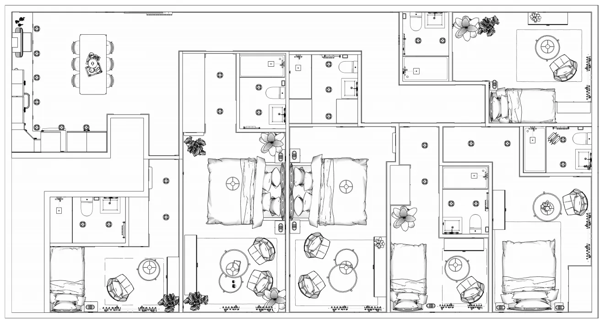
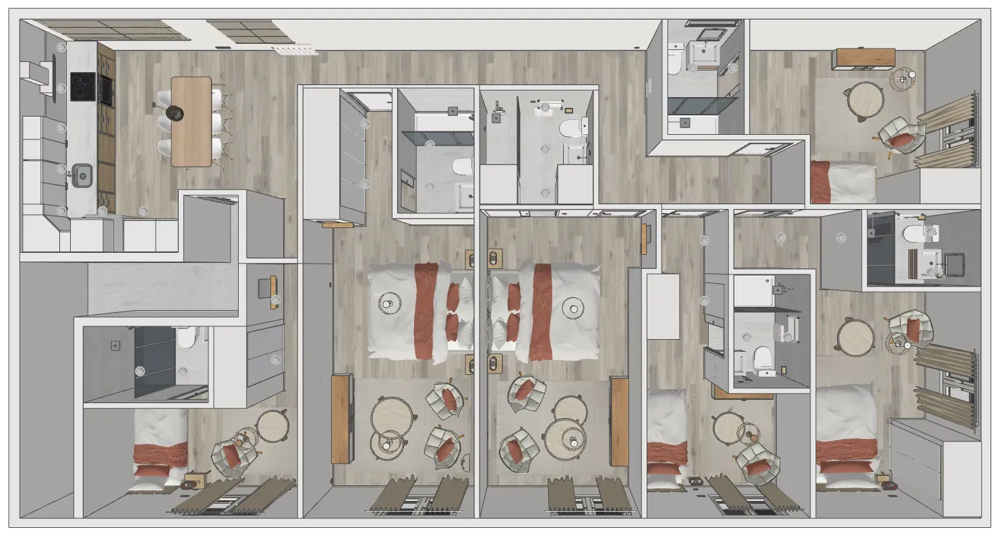
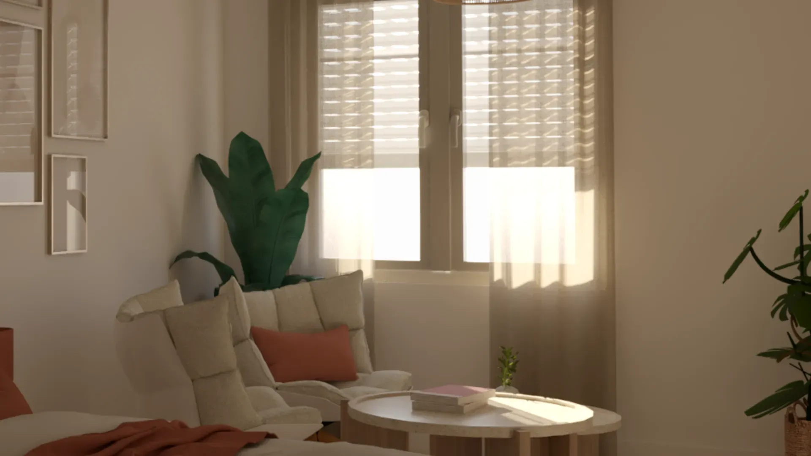

Commercial-to-Residential Conversion · Madrid
A residential project approached as a home: clear decisions, controlled materials and a coherent result.
Context
Giving an existing commercial unit a genuinely domestic logic.
This project starts from a 110 m² commercial space in Madrid designed as a shared home, with a demanding programme: en-suite bedrooms and common areas that properly hold the overall layout together. The challenge was not simply “fitting rooms in”, but building a real residential logic: clear circulation, a calm atmosphere and an organised reading of the space.


Objective
Organising a complex programme without losing spatial quality.
The objective was to organise the space as a shared home: legible at first glance, with natural circulation and common areas that bring unity to the whole. Beyond the number of rooms, the key was how they relate to one another: privacy, day-to-day use and overall coherence.


Proposal
Circulation, light and restrained decisions to create unity.

Integrated kitchen
The kitchen is designed as an everyday-use element integrated into the overall set. The space is resolved with a true residential logic: tuned proportions, contained furnishing and a coherent image that avoids the feeling of a “sum of rooms”.

Balanced bedrooms
Each bedroom was approached as a complete, self-contained space: a sleeping area, a small sitting corner and a private bathroom.
The intent was for each person to feel comfortable and independent, while keeping the overall project consistent.
The layout is clear and functional, and materials were selected for ongoing use: durable, easy to maintain and pleasant for everyday life.
Bathrooms · clarity and durability
The bathrooms follow the same principle: clarity, lighting and durability above the unnecessary. Layered textures add depth and character, while keeping a clean, coherent reading of the space.


Result
From design to reality — without distortions.
The executed result confirms the intent of the project: decisions taken during the design phase translate into the build with coherence. Lighting — especially in bathrooms and circulation — is delivered exactly as planned, so the render works as a real guide for execution, not as a disconnected image.
The whole reads as a home designed from use: spaces that are easy to understand, comfortable to live in and calmly defined — where design supports daily life instead of imposing itself.


{kind=link}
{kind=link}
{kind=link}